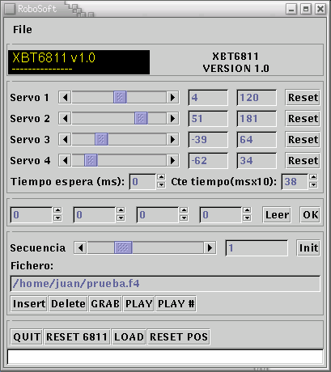

| XBT6811: Manejo de 4 servos conectados a la tarjeta BT6811 |
INTRODUCCIÓN
La tarjeta BT6811, desarrollada por Andrés Prieto-Moreno Torres, permite controlar la posición de 4 servos del tipo Futaba 3003 o compatibles, y se puede conectar en red con otras BT6811 para ampliar el número de servos a mover.
Todas las tarjetas BT6811 conectadas en red se comportan como nodos esclavos, gobernadas por un nodo maestro, que puede ser cualquier micro que disponga de SPI. La conexión de una CT6811 como nodo maestro es inmediata. Las aplicaciones que se desarrollan con esta red de microcontroladores pueden ser autónomas o pueden estar controladas desde el PC.
Este es el caso del programa XBT6811 que permite controlar la posición de 4 servos de una BT6811 conectada por el SPI a una CT6811 que a su vez está conectada al PC por el puerto serie. Mediante una interfaz muy simple se pueden generar secuencias de movimiento, que se almacenan en ficheros para su posterior reproducción. Esto permite realizar prototipos de robots o sistemas articulados de una manera muy rápida.
Aquí puedes ver una captura de pantalla de la version 1.0:

AUTOR: Juan González Gómez (a.k.a. Obijuan), Marzo 2001
LICENCIA: GPL
DESCRIPCIÓN El interfaz del programa fue realizado usando las librerías GTK-1.2. Para las comunicaciones serie se emplea la librería CTS-1.4. La configuración para poner en marcha el sistema es la siguiente:
HARDWARE:
- Tarjeta BT6811 conectada a una tarjeta CT6811 por el SPI
- Tarjeta CT6811 conectada al puerto serie COM1 del PC (dispositivo /dev/ttyS0)
SOFTWARE:
Una vez realizadas las conexiones y ejecutado el programa XBT6811, hay que pulsar la tecla "LOAD" para cargar el programa btserver en la CT6811. A partir de ese momento, y si la carga se ha realizado correctamente, se podrá controlar la posición de los servos mediante las barras de desplazamiento.
PLATAFORMA: Linux
DOWNLOAD:
FICHEROS PARA DESCARGAR
xbt6811-1.0-2.tgz (52KB) Programa XBT6811. Versión 1.0. Fuentes y ejecutable futA.asm (12KB) Programa servidor para la BT6811. Fichero fuente futA.s19 (696 Bytes) Programa servidor para la BT6811. Ejecutable btserver.asm (3KB) Programa maestro para la CT6811. Fichero fuente btserver.s19 (303 Bytes) Programa maestro para la CT6811. Ejecutable
NOTICIAS 18/Sep/2002: Puesta version 1.0-2, que soluciona un problema de compilación 16/Agosto/2002: Publicado programa XBT6811 en esta web
AGRADECIMIENTOS:
- La parte del programa encargada de la grabación y reproducción de secuencias de movimiento está inspirado en el programa de control de PUCHOBOT realizado por Andrés Prieto-Moreno Torres
CRÉDITOS: Tarjeta BT6811 y los programas futA.asm y btserver.asm han sido desarrollados por Andrés Prieto-Moreno Torres
Tarjeta CT6811, Microbótica